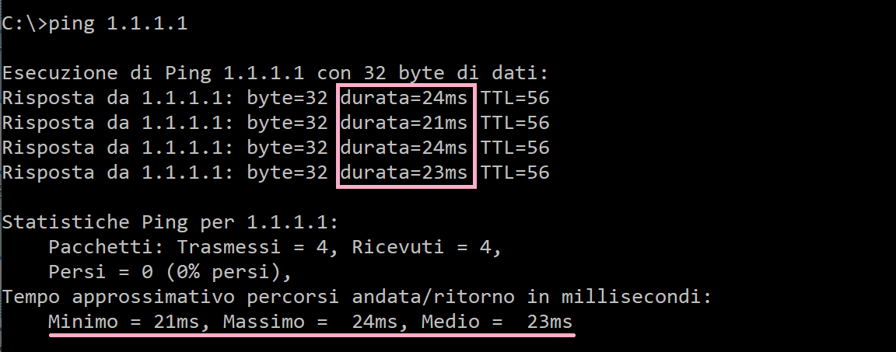

ping
Argomenti teorici e requisiti tecnici
Prerequisti: Windows: command prompt. Linux, Mac: terminale
Argomenti trattati: Indirizzamento IP
ping è un software di diagnostica di rete, implementato in tutti i sistemi operativi, che misura il tempo (in millisecondi) impiegato da uno o più pacchetti ICMP a raggiungere un altro dispositivo di rete e tornare indietro.
Tecnicamente ping invia un pacchetto ICMP di echo request e rimane in attesa di un pacchetto ICMP di echo response in risposta. Solitamente infatti la parte di OS dedicata alla gestione delle reti (stack di rete) è impostata per rispondere automaticamente con un pacchetto echo response alla ricezione di un pacchetto di echo request.
Il comando ping su Windows è impostato per inviare 4 pacchetti ICMP, attendere 4 risposte e poi calcolare le statistiche di ricezione e velocità. La sintassi del comando ping è la seguente:
Evitiamo di addentrarci nel discorso delle opzioni del comando ping e vediamo semplicemente il funzionamento e l'utilità dello stesso.

Come si vede, basta scegliere un target host (tramite IP o hostname) e lanciare il comando. Al termine dell'esecuzione bisogna osservare i pacchetti ritornati e le statistiche di viaggio degli stessi per valutare la salute e le performance della rete stessa.
Attenzione!
Il comando ping su Windows è impostato automaticamente ad interrompersi dopo l'invio di 4 pacchetti.
In ambienti Linux o Mac invece, il comando ping continua indefinitamente ad inviare pacchetti finché non lo si interrompe con un comando CTRL + C (mela + C su Mac). Quando viene interrotto l'invio vengono generate le statistiche.
Il comando ping insieme ai comandi ipconfig e traceroute sono un ottimo strumento di diagnostica e sono semplicissimi da utilizzare. L'importante è ragionare sui risultati che si ottengono e formulare deduzioni appropriate.
Ping test #1
Nel primo test, valutiamo la connettività della nostra rete. Controllando (con ipconfig/ifconfig/ip a seconda del sistema) abbiamo visto che il nostro IP è 192.168.0.7 e che il nostro gatweway è 192.168.0.1.
I test da eseguire sono nell'ordine i seguenti
# ping al nostro indirizzo
# se risponde significa che la scheda è attiva e funzionante
$ ping 192.168.0.7
# ping al nostro gatweway
# se risponde significa che la nostra rete è attiva e funzionante
$ ping 192.168.0.1
# ping ad un IP esterno
# se risponde significa che abbiamo connettività Internet
$ ping 1.1.1.1
# ping ad un host
# se risponde significa che anche la risoluzione DNS funziona!
$ ping google.it
Se tutti questi test hanno funzionato correttamente, potete stare certi che il vostro dispositivo è ben connesso alla rete Internet. In caso negativo, valutando quale test fallisce potete in maniera semplice individuare il problema.
Ping test #2
Nel secondo test valutiamo la velocità dei server DNS che stiamo utilizzando. Si tratta di risolvere un host tramite una risoluzione DNS manuale e poi valutare la differenza di prestazioni fra il ping con hostname e il ping con IP.
# risoluzione
$ nslookup example.com
1.2.3.4
# ping HOSTNAME
$ ping example.com
...
# ping IP
$ ping 1.2.3.4
...
Ovviamente questo test è molto empirico e non sempre funziona poiché non
tutti i dispositivi rispondono ai ping 
Ping test #3
Nel terzo test cercheremo di valutare la velocità della propria rete. L'idea di base è questa. Si scelgono 3 siti a caso (ad esempio: youtube.com, quotidiani.net, autoscout24.it) e si fanno i ping ad ognuno di essi. Si osservano i valori scegliendo il più alto riportato nei tre test e si valuta la rete secondo la seguente tabella:
| ping time (ms) | velocità rete |
|---|---|
| > 0 - 20 | Ottima |
| 20 - 40 | Buona |
| 40 - 60 | Discreta |
| 60 - 80 | Sufficiente |
| oltre 80 | ... |
Okkio eh...
Questa tabella e questo modo di valutare la velocità di una rete hanno pochissime basi scientifiche e sono solo una stima di massima che io di solito faccio per valutare una rete.
La velocità della rete dipende da moltissimi fattori, tra cui: i siti che visitate, l'orario di utilizzo, l'hardware a disposizione, la connessione wifi vs cablata, etc...